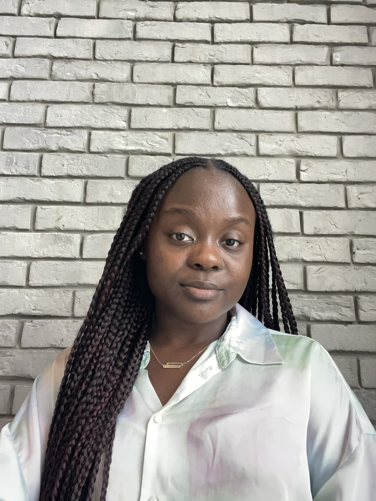
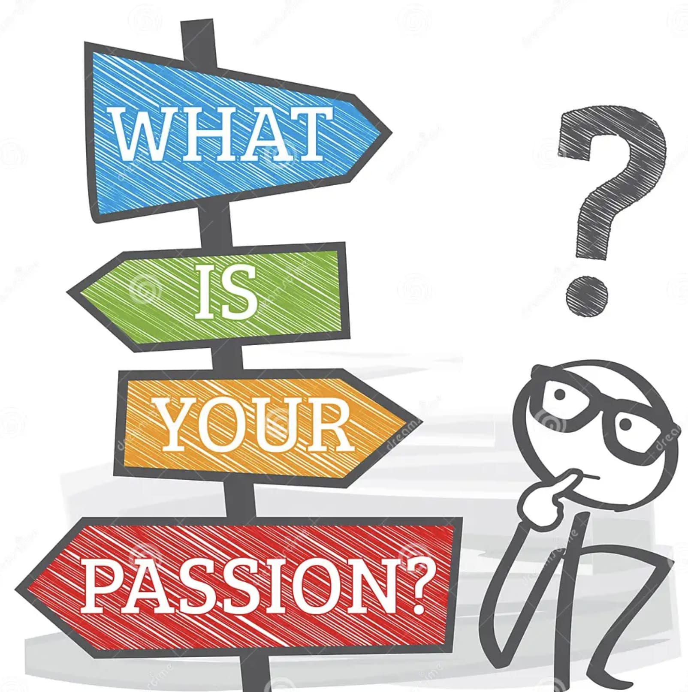

Nom: Brunic
Âge: 18 ans
Parcours Scolaire
Brunic a commencé par un BAC spé physique-chimie et mathématiques, puis elle est entrée en première année à l’IIM. Elle a pu explorer tous les domaines que l'école propose et a finalement choisi l'axe Coding et Innovation Numérique. Petit mot de Brunic sur sa première année : "C'était une expérience formidable malgré les hauts et les bas. J'ai rencontré des personnes qui m'entraînent souvent à l'Aubrac. J'ai réussi mon année et aujourd'hui je suis en A2 dans l'axe souhaité".
Passions
Texte
Comportement

Texte